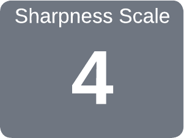

|
|
|
Machetes |

Edge Angles
Guidelines shown below are for Included Angles (α).
This tool is often sharpened using a machinist's hand file or a sharpening puck (aka, a whetstone) whilst holding the bade in the non-dominant hand. Thusly, the angles are shown as a β angle rather than an α angle.
If using a Tormek, the Extended Universal Support (US-430) is highly recommended.
Gardening is a way that humans and nature come together with the intent of creating beauty.
Tina James
No microbevel is recommended for this tool.
|
General Guidelines |
||
|
Type |
α |
Notes |
|---|---|---|
| General Use | 20° - 25° |

click on the gray block to see more
|
| Heavy wood cutting | 25° - 30° |

click on the gray block to see more This gives a more durable edge, particularly when the target may have unknown items buried in it (such as nails in a tree). |
The shape of the grind used is a call best made by the tool's use, based on your own experience. Additional notes are available on separate web pages for Grind Profiles, and Micro / Secondary Bevels.
New machetes should not needed to be reshaped. However, they may need work if a nick is incurred in the blade.
Whenever you sharpen a blade you must choose a balance between sharpness and durability. In this video I talk about blade angles and I explain what I believe to be the best all-around sharpening angle for machetes and discuss other sharpening angles for other types of blades and their uses.
I also demonstrate how I typically sharpen a machete to a sharp but durable edge using two very inexpensive tools.
Also addressed in this video are the activities needed to reshape handles on new machetes to make them more usable.
This video shows a good selection of methods for sharpening, including stones, a Tormek, & a Worksharp.